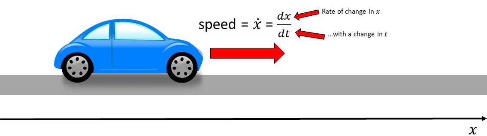
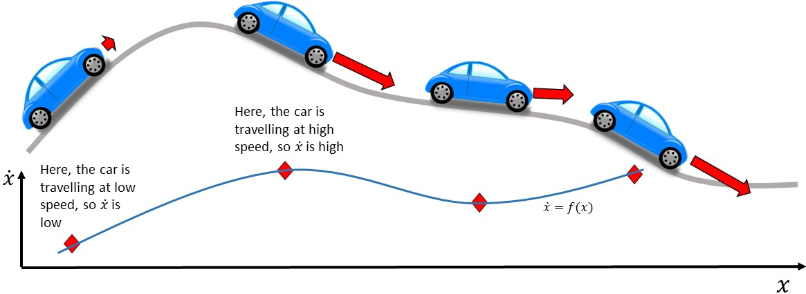

A dynamical system is a mathematical way to describe something that evolves over time. Consider the figure below of a car on a road. We can describe the position of the car by the variable \(x\), which tells us how far along the road the car has travelled. Since the car is free to move along the road, the position of the car evolves over time. This means the car is an example of a dynamical system.
If we were to describe the motion of the car, we would usually say how fast the car is going. It is often natural to describe a dynamical system by its rate of change - in this case the speed of the car. Mathematically, we denote this value as \(dx \over dt\), which how much \(x\) changes (\(dx\)) with a change in time (\(dt\)). We often use the short-hand notation \(\dot x\), which is equivalent to \(dx \over dt\).
For a car going at constant speed \(v\), we can write \(\dot x = v\). Generally speaking, however, \(\dot x\) depends on \(x\). For example, in the figure below, the car is now moving along a hilly road. When the car is going steeply uphill, it travels at low speed, but when it is going steeply downhill, it travels fast. Mathematically, we write this relationship as \(\dot x=f(x)\), where \(f(x)\) is a mathematical function (or equation) that relates \(\dot x\) to \(x\). We can plot \(\dot x\) against \(x\) to help visualise this relationship more clearly, as shown in the figure below.
The car doesn't always have to be moving forward along the track (\(\dot x > 0\)). It can also reverse (\(\dot x < 0\)) or come to a stop (\(\dot x = 0\)). When \(\dot x = 0\), we call this a steady state.
Plotting \(\dot x\) vs \(x\) can be extremely useful for understanding what the dynamical system will do. Consider the dynamical system \(\dot x=f(x)\) plotted in the figure below. This plot tells us all of the possible information we could need to understand what the system will do.
We know that when \(\dot x>0\), \(x\) is increasing. This means we are moving right along the \(x\) axis. Hence we can annotate the plot with arrows pointing right anywhere that \(\dot x>0\) (shown in red on the figure below). Furthermore, we know that when \(\dot x < 0\), \(x\) is decreasing. This means we are moving left along the \(x\) axis. Hence we can annotate the plot with arrows pointing left anywhere that \(\dot x>0\) (also shown in red on the figure below). Finally, we have a steady state anywhere that \(\dot x = 0\). Steady states are marked by circles on the figure below.
You have probably noticed that some circles are filled in the figure, whilst others are not. Can you figure out why this is? Consider what would happen if the system is at the green star. Since \(\dot x\) is negative, \(x\) decreases towards the filled black dot to the left. Now consider the same for the blue star. Since \(\dot x\) is positive, \(x\) increases towards the filled black dot to the right. No matter how close we start to this steady state, as long as we are not exactly on the steady state we move away from it. This type of steady state is known as an unstable steady state.
On the other hand, when the system starts in the vicinity of a steady state marked by a black dot (e.g. the orange or purple stars), it will move towards the steady state. This type of steady state is known as a stable steady state.
By marking the steady states using knowledge of when \(\dot x = 0\) and drawing left or right arrows using knowledge of the sign of \(x\), we can predict what it is that the system might do. Here, we know that what the system does depends on where the system starts along the \(x\) axis, known as the initial conditions. There are five possible outcomes in this system: